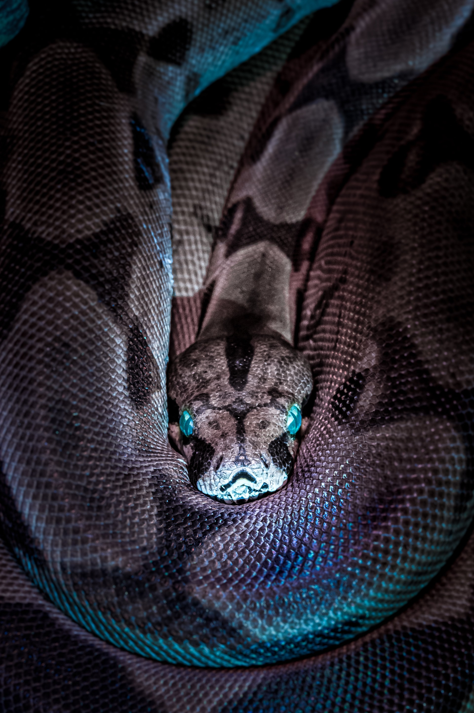
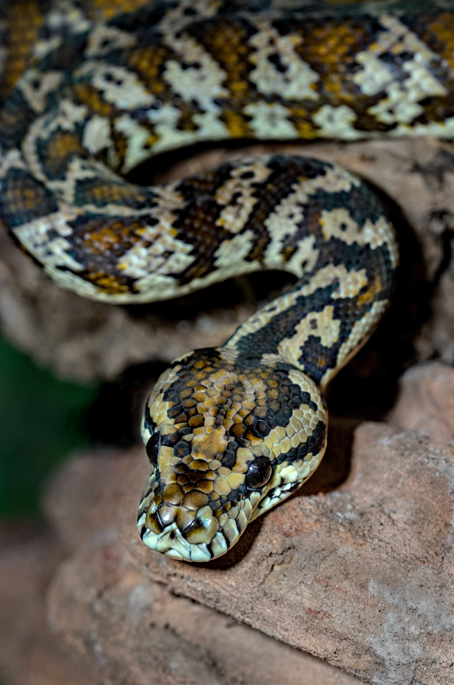

Lizards have evolved elongate bodies without limbs or with greatly reduced limbs about twenty-five times independently via convergent evolution, leading to many lineages of legless lizards.
Lizards have evolved elongate bodies without limbs or with greatly reduced limbs about twenty-five times independently via convergent evolution, leading to many lineages of legless lizards.Snakes live in every continent, except Antarctica and countries close to the arctic (Ireland, New Zealand, Greenland, and Iceland). They curl up in rocks,tall grass, and under leaves.
Snakes are elongated, limbless, reptiles of the suborder Serpentes.Like all other squamates, snakes are ectothermic, amniote vertebrates covered in overlapping scales. Many species of snakes have skulls with several more joints than their lizard ancestors, enabling them to swallow prey much larger than their heads with their highly mobile jaws. To accommodate their narrow bodies, snakes' paired organs tappear one in front of the other instead of side by side, and most have only one functional lung. Some species retain a pelvic girdle with a pair of vestigial claws on either side of the cloaca. Lizards have evolved elongate bodies without limbs or with greatly reduced limbs about twenty-five times independently via convergent evolution, leading to many lineages of legless lizards.